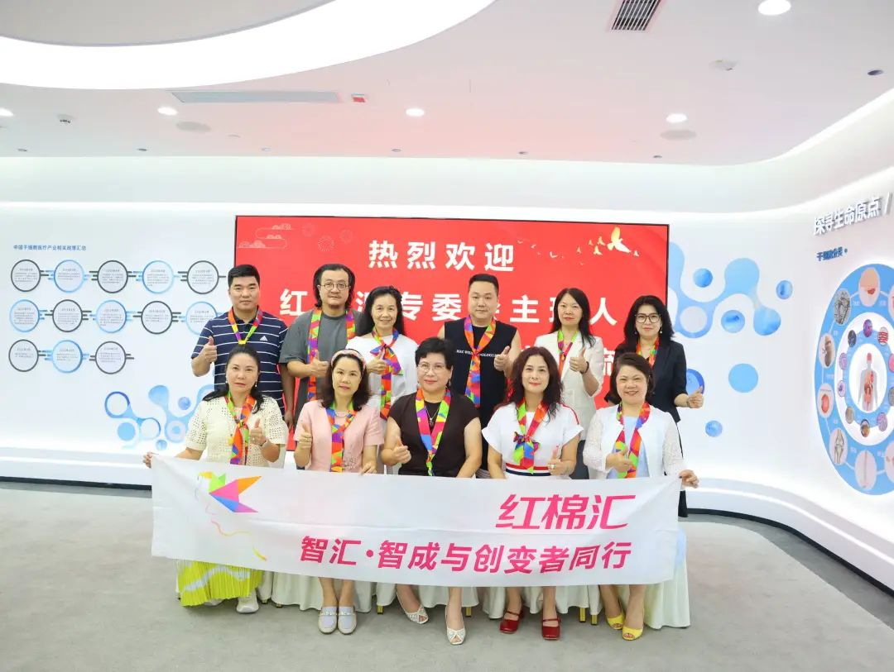
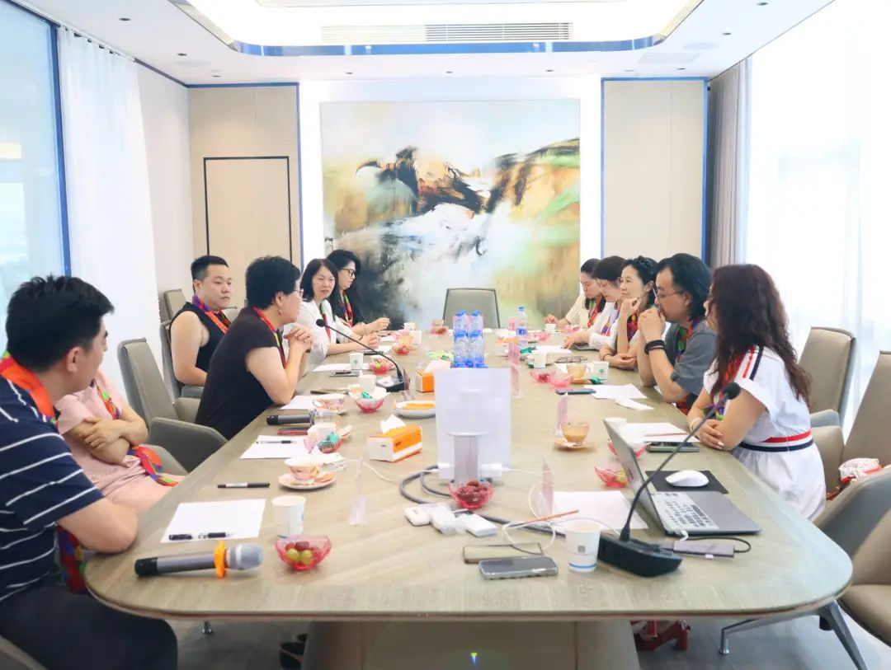
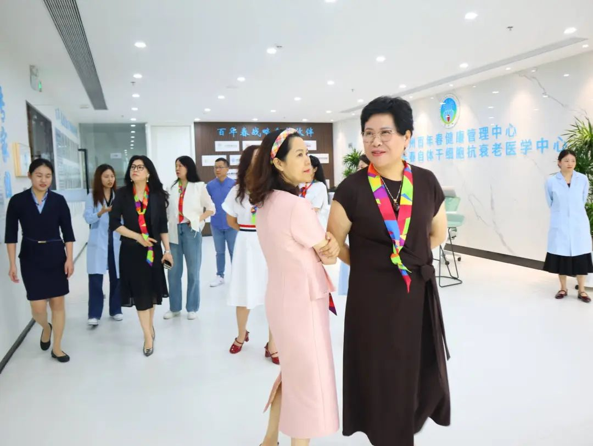
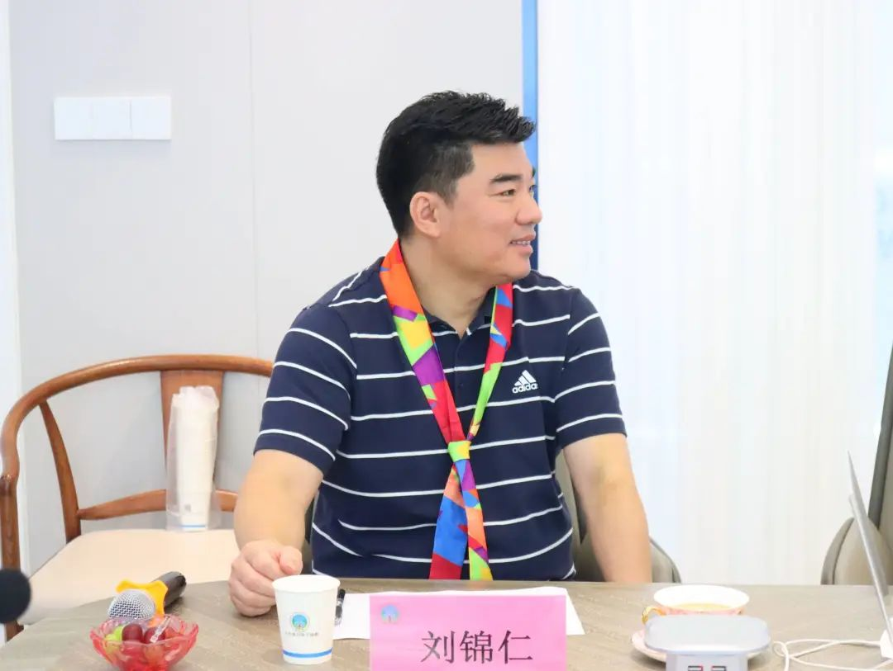
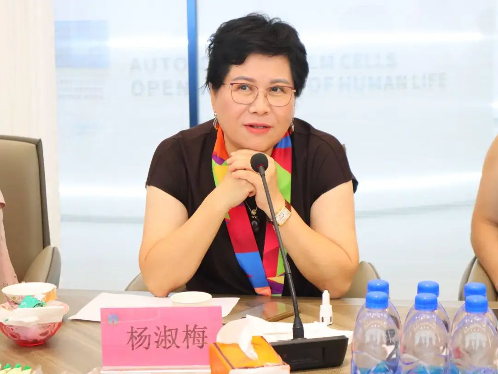
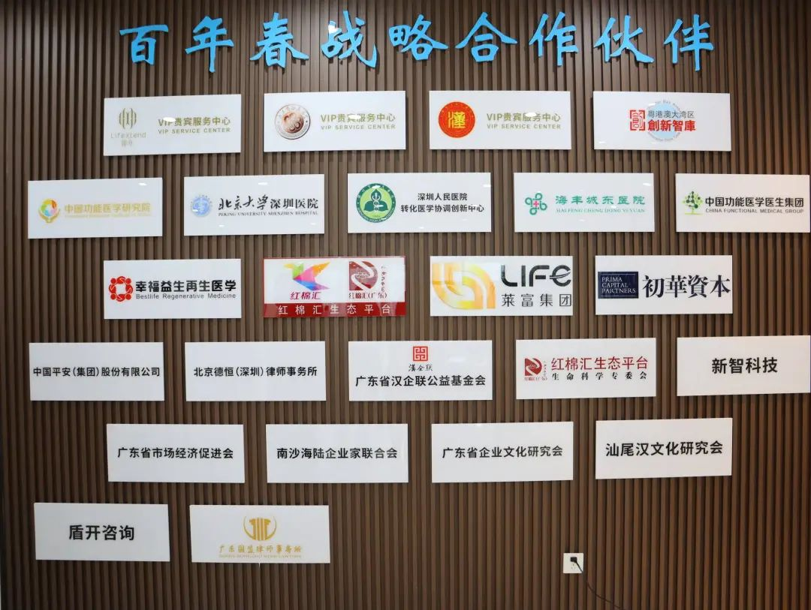

About Us
关于百年春
红棉汇专委会2024发展研讨会第3期——“走进百年春”于2024年8月20日下午在百年春自体干细胞生命银行圆满举办。

01 红棉汇专委会：生命科学的领航者
红棉汇专委会的成立，旨在整合行业资源，促进技术创新，为健康科学产业的发展注入新动力。我们深知，生命科学的进步是推动社会健康水平提升的关键。因此，专委会自成立以来，便致力于探索前沿科技，为人类的健康事业贡献力量。

自体干细胞：抗衰老的奇迹钥匙
激活细胞再生：自体干细胞能够激活人体自身的修复机制，促进新细胞的生成与老化细胞的替换。这一过程不仅有助于改善皮肤质量，使皮肤恢复紧致光滑，还能增强身体各器官的功能，延缓衰老过程。
提高免疫力：：随着年龄的增长，人体免疫力逐渐下降，易受疾病侵袭。自体干细胞通过增强免疫细胞的活性与数量，提高人体的整体免疫力，使身体更加健康、有活力。
改善身体机能：自体干细胞在回输到人体后，能够分化为多种类型的细胞，包括神经细胞、肌肉细胞、生殖细胞等。这些新生成的细胞能够修复受损组织，改善身体机能，使人在年龄增长的同时依然保持青春活力。
提高新陈代谢：自体干细胞在回输后可以增强代谢酶活性、改善脂质代谢，促进能量转换和废物排出，从而加快新陈代谢速度。

02 走进百年春：科技与健康的完美融合
先行者与实践者

03 女企业家：自体干细胞技术的受益者

04 专项领域优势：赋能健康科学产业发展
红棉生命科学专委会将与百年春携手共进，继续深耕自体干细胞领域，加强与国内外顶尖科研机构的合作与交流，推动科技成果的转化与应用。
我们坚信，在全体成员的共同努力下，我们一定能够携手并进、共创未来。让我们以科技为翼、以健康为舵，共同书写健康科学产业发展的新篇章！

上一篇：
下一篇：
年后肝"负重"？百年春护肝美颜能量抗衰老针——给肝"松绑"，让脸发光！
2026-03-01
自体干细胞逆转高血脂，重启健康代谢！
2026-01-12
生殖干细胞
2025-12-10
强直性脊柱炎
2025-12-01
间充质干细胞
2025-11-14